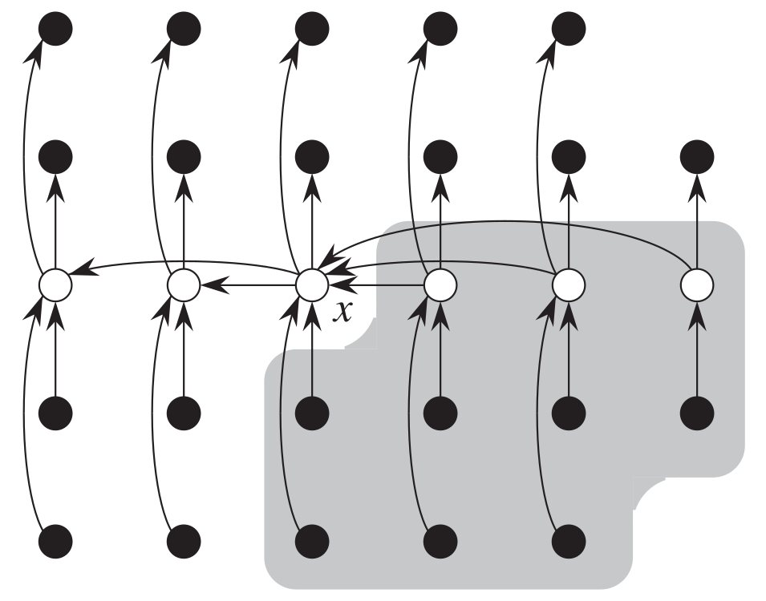

Beyond Analysis: Implementation and Modification of Algorithms
Overview
Throughout EECS 477 (Introduction to Algorithms), we covered a large variety of algorithms. In this project, I first implemented 3 of the aglorithms covered in lecture as they were written. I then expanded on this by making modifications to the algorithms as well as applying some of the algorithms to various datasets.
Why I built this
While the class was mainly focused on analyzing algorithms from a mathematical perspective, I wanted to develop a deeper understanding of each part of each algorithm, which is necessary to properly implement each one.
Technical highlights
Challenge: Correctness Verification
Some of the algorithms are rather technical, making the code for the algorithm hard to analyze.
Results
I showed that a selection function that uses the median-of-medians approach works best for a brute-force threshold of 11, 13, or 15. I also analyzed a dataset of Facebook friends from the Stanford Large Network Dataset Collection and found that the distribution of the sum of friend-distances for a given person was multimodal, which was highly unexpected.

Expanding on this project
I am satisfied with all of the work I did on the 3 algorithms I chose. However, the course covered many algorithms beyond the 3 I chose to code up, and I would like to explore these algorithms more in-depth as well.